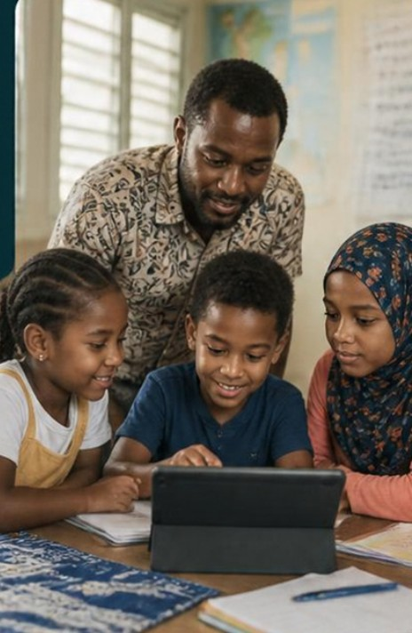

Appel à volontaires
L’IA dans
L’IA dans
ma classe.
Une formation pour les enseignants volontaires : des usages concrets, responsables et adaptés à nos élèves.

Ce que vous allez apprendre
Préparer plus vite
Séquences, différenciation et supports adaptés aux élèves allophones.
Créer avec les élèves
De l'écriture à la chanson, comme l'hymne d'école mis en musique avec l'IA.
Faire progresser le français
Oral, lecture, vocabulaire : des activités prêtes pour la classe.
Garder un usage éthique
Pas de compte élève, données protégées, esprit critique développé.
Pour qui ?Enseignants du 1er degré, cycles 1 à 3. Débutants bienvenus, aucun prérequis technique.
Comment ?Ateliers pratiques en petits groupes. Venez avec votre ordinateur ou votre téléphone.
DATE
LIEU
INSCRIPTION AVANT LE